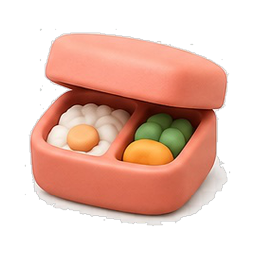
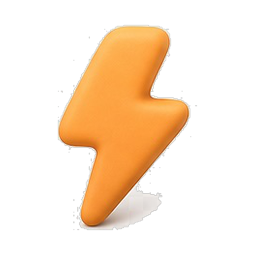

오늘의 체인
7월 4일 금요일
프로세스 8개 — 사전 계획 7 · 즉석 슬롯 1
82%
프로세스 5/8 진행 · 현재 평균 달성률
Chain — 06:00 → 23:00
-
06:00
✓
 기상·새벽 커밋100%
기상·새벽 커밋100% -
08:00
 이동·출근54%
이동·출근54% -
09:00
 오전 업무
오전 업무 -
12:30

점심 CS 5문제 -
15:00

즉석 계획 슬롯 -
19:00
 저녁 자소서
저녁 자소서 -
23:00
하루 마감